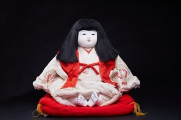

Miyasama Ningyō (Búp bê Thái tử) là dòng búp bê truyền thống tái hiện hình ảnh hoàng tử hoặc thiếu niên thuộc Hoàng gia Nhật Bản. Từ 宮様 (Miyasama) là cách gọi tôn kính dành cho các thành viên nam của Hoàng thất, vì vậy búp bê này mang ý nghĩa cao quý và trang trọng.
Tác phẩm thể hiện một vị hoàng tử trẻ đang ngồi trên đệm zabuton, mặc trang phục truyền thống của hoàng gia với áo khoác đỏ nổi bật bên ngoài kimono màu trắng. Những họa tiết thêu trên tay áo và màu sắc hài hòa phản ánh vẻ đẹp thanh lịch, trang nghiêm của văn hóa cung đình Nhật Bản. Gương mặt hiền hòa, mái tóc dài và đôi bàn chân xếp gọn tạo nên hình ảnh trong sáng, điềm tĩnh và đầy khí chất.
Trong văn hóa Nhật Bản, Miyasama Ningyō thường được trưng bày cùng các búp bê truyền thống trong những dịp lễ dành cho trẻ em, đặc biệt là Tango no Sekku (端午の節句 – Ngày Thiếu nhi Nhật Bản, 5/5) hoặc trong các bộ sưu tập búp bê cung đình. Tác phẩm gửi gắm lời chúc trẻ em lớn lên khỏe mạnh, thông minh, nhân hậu và có một tương lai tươi sáng.
Không chỉ là một tác phẩm thủ công mỹ nghệ tinh xảo, Miyasama Ningyō còn phản ánh nét đẹp của văn hóa Hoàng gia Nhật Bản, đồng thời thể hiện niềm tin vào sự kế thừa truyền thống, giáo dục và những giá trị đạo đức được gìn giữ qua nhiều thế hệ.
宮様人形は、日本の皇室の皇子や少年の姿を再現した伝統人形です。「宮様」は皇族の男性に対する敬称であり、そのためこの人形は気高く格調ある意味を持っています。
本作は、座布団の上に座った若い皇子の姿を表しており、白い着物の上に鮮やかな赤い上着を重ねた、皇室の伝統的な装束をまとっています。袖に施された刺繍の文様と調和のとれた色彩が、日本の宮廷文化の上品で厳かな美しさを映し出しています。穏やかな顔、長い髪、きちんとそろえた足が、清らかで落ち着いた、気品ある姿をつくり出しています。
日本文化において宮様人形は、子どものための行事、特に端午の節句（5月5日、こどもの日）に他の伝統人形とともに飾られたり、宮廷人形のコレクションに加えられたりしてきました。本作には、子どもが健やかに、賢く、心やさしく育ち、明るい未来をつかめるようにとの願いが込められています。
宮様人形は精巧な手工芸品であるだけでなく、日本の皇室文化の美しさを映し出すとともに、世代を超えて受け継がれてきた伝統、教育、道徳的価値の継承への信頼を表しています。